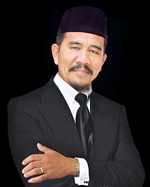

Sejarah dan keunggulan smk telkom
di tulis oleh Ratu Aziz pada tanggal 11 agustus 2023
Sekolah Manengah Kejuruan (SMK) TELKOM Pekanbaru merupakan
salah satu sekolah yang berada dibawah naungan Yayasan Islam Riau (YIR).
Sekolah ini merupakan sekolah swasta yang didirikan pada tahun 2001 dan
diresmikan pada tanggal 27 Juni 2002 dengan SK Pendirian : NO. 007/PPDIKRORA/VI/02. Skolah Telkom pada awalnya terletak di Jl. Soekarno -
Hatta komplek sentral bisnis Pekanbaru dan pada tahun 2013 telah pindah ke
gedung baru yang berlokasi di Jl. Melati - Jl. Esemka, Kec. Tampan.smk ini memiliki berbagi jurusan diantara lain ad tenik kendaraan ringan,
teknik sepeda motor, perhotelan, admintrasi perkantoran, teknik komputer dan jaringan, dan teknik jaringan akses.
SMK Telkom Pekanbaru juga memiliki berbagai keunggulan jika
dibandingkan dengan SMK lainnya, seperti:
1. Menamatkan siswa- siswi yang berwawasan luas, kreatif , inovastif
dinamis, serta memiliki karakter dan kepribadian yang kuat, amanah serta
berakhlak mulia
2. bagi siswa yang berprestasi diberikan beasiswa oleh yayasan dan instansi
lainnya
3. Siswa diberikan pendidikan pesantren bagi yang beragama islam
4. Untuk PKL (Praktek Kerja Lapangan, red), SMK Telkom bekerjasama
dengan berbagai perusahaan yang ada.
Daftar nama guru di smk telkom
- Yossy Syafrianti, S.T, M.Pd. Waka Umum.
- Dwi Julianto, S.Pd. Waka Sarpras.
- Asrizal, S.Sos., M.Si. Waka Kurikulum.
- Fitri Liani, S.Pd. Operator.
- Desnalti, S.Pd. Bimbingan Konseling.
- Suci Rahmini, S.Pd. Guru Bahasa Inggris.
- Sri Ulfa, S.Pd. Guru Matematika.
- Pajri Zoni, S.Pd guru produktif adp
- Israk Apriadi, S.Pd. waka humas
- Mita Sari, S.Pd. guru produktif tkj
- Wiga Afriwati Sari, S.Pd. guru produktif tkj
- Betrianis, S.Psi. bimbingan kenseling
- Elya Muchlina, S.Pd. guru bahasa indonesia
- Dhewi Astuti, S.Pd. guru bahasa inggris
- Desi Gusmita, S.Pd. guru matematika
- Azizah Azlina, S.Pd. guru kwu
- Amrizal, S.Pd. guru pjok
- Ilham Gusniri, S.kom. waka tata usaha
Nama jurusan di smk telkom


jurusan di smk telkom anatara lain :
1. teknik komputer dan jaringan
2. admintrasi perkantoran
3. teknik jaringan akses
4. teknik sepeda motor
5. teknik kendaraan ringan
6. akuantasi
7. perhotelan
Kepala sekolah smk telkom pekanbaru

Nama : Muhammad faisal S.PD
jabatan :kepala sekolah
kontak sekolah
☎ 0761-6700787
✉ smktelkomyir@gmail.com
sarana dan prasarana
Sarana
Sarana pembelajaran cukup baik di ruang kelas. Tempat duduk
dan meja siswa yang ada di dalam ruangan ada dalam kondisi baik.
Untuk media pembelajaran sudah memadai, antara lain terdapat Lab.
Komputer, Bengkel, dan Perpustakaan. Jumlah buku semakin lengkap.
Prasarana
Prasarana penunjang pembelajaran pada semua kelas tersedia dan sesuai dengan kondisi masing-masing. Adapun keadaannya adalah :
- Ruang kelas 100 % baik
- Ruang kantor 100% baik
- Ruang Perpustakaan 100% baik
- Ruang Lab. baik
- Keadaan Kamar Kecil 90% baik
- Masjid Tempat Ibadah 100% baik